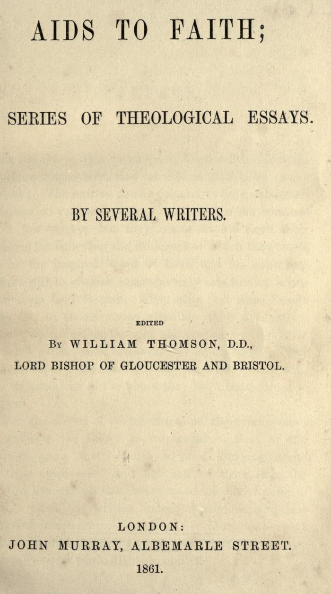
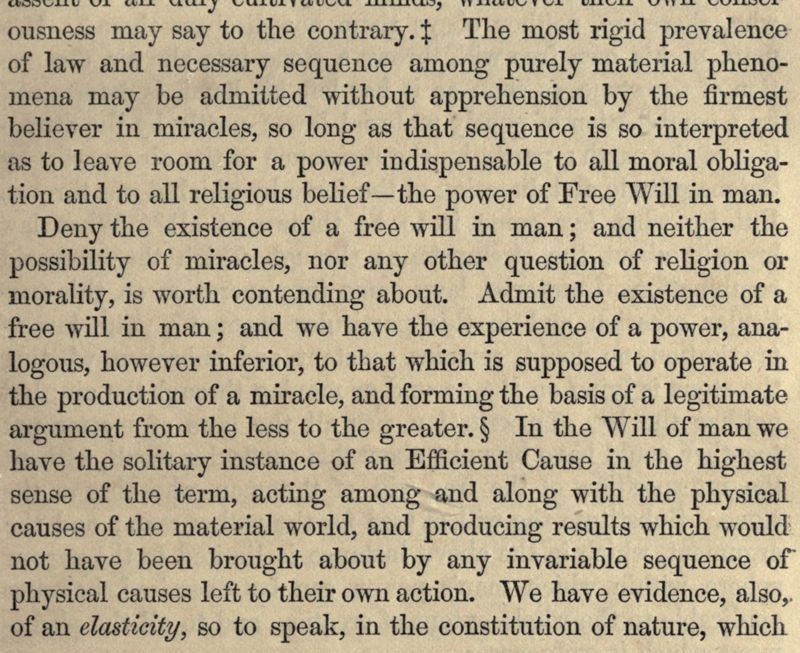
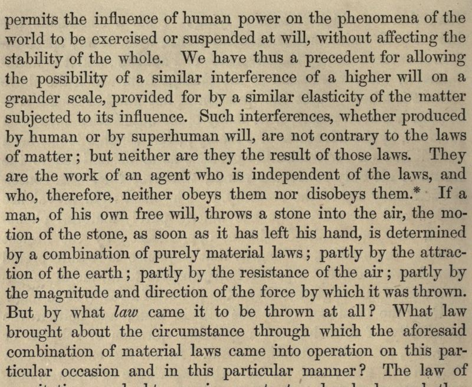
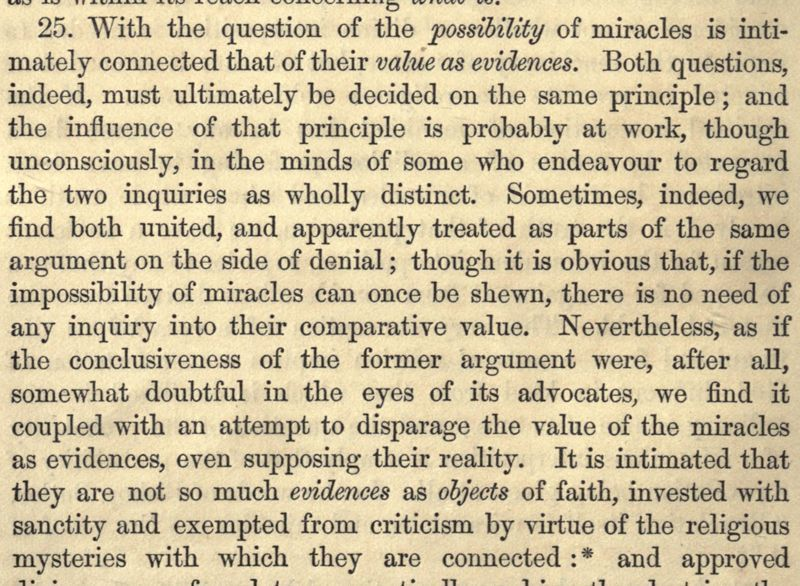
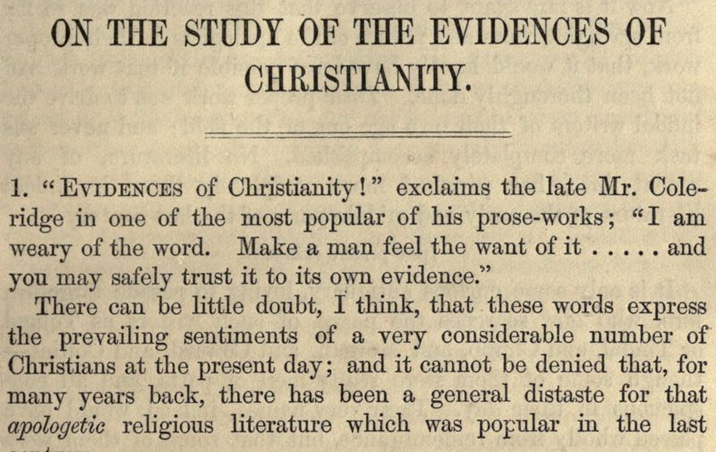

Mansel: free will as a precedent for miracle (pp. 19–20)
Essay I, “On Miracles as Evidences of Christianity”, pp. 19–20, scan n30–n31. Highlighted: the argument Lecky summarises at note 23.


The most rigid prevalence of law and necessary sequence among purely material phenomena may be admitted without apprehension by the firmest believer in miracles, so long as that sequence is so interpreted as to leave room for a power indispensable to all moral obligation and to all religious belief—the power of Free Will in man. Deny the existence of a free will in man; and neither the possibility of miracles, nor any other question of religion or morality, is worth contending about. Admit the existence of a free will in man; and we have the experience of a power, analogous, however inferior, to that which is supposed to operate in the production of a miracle, and forming the basis of a legitimate argument from the less to the greater. In the Will of man we have the solitary instance of an Efficient Cause in the highest sense of the term, acting among and along with the physical causes of the material world, and producing results which would not have been brought about by any invariable sequence of physical causes left to their own action. We have evidence, also, of an elasticity, so to speak, in the constitution of nature, which [p. 20] permits the influence of human power on the phenomena of the world to be exercised or suspended at will, without affecting the stability of the whole. We have thus a precedent for allowing the possibility of a similar interference of a higher will on a grander scale, provided for by a similar elasticity of the matter subjected to its influence. Such interferences, whether produced by human or by superhuman will, are not contrary to the laws of matter; but neither are they the result of those laws. They are the work of an agent who is independent of the laws, and who, therefore, neither obeys them nor disobeys them. If a man, of his own free will, throws a stone into the air, the motion of the stone, as soon as it has left his hand, is determined by a combination of purely material laws; partly by the attraction of the earth; partly by the resistance of the air; partly by the magnitude and direction of the force by which it was thrown. But by what law came it to be thrown at all? What law brought about the circumstance through which the aforesaid combination of material laws came into operation on this particular occasion and in this particular manner? …
Lecky (ch. II, text at note 23): “The idea of interference can present no difficulty to anyone who admits human liberty; for those who acknowledge that liberty must hold that man has a certain power of guiding and controlling the laws of matter …” That is a fair summary of Mansel. Lecky’s preceding sentence, that miracles are “performed simply by the application of natural means guided by supernatural knowledge”, is not Mansel’s language: Mansel says such interferences are “not the result” of material laws but the work of an agent “independent of the laws”. Lecky’s sentence covers a wider school (note 24 adds the Edinburgh Review; see that page).
A footnote on p. 19 answers “an attempt … recently made to prove the non-existence of free will, by means of statistical calculations”: averages hold of masses, Mansel replies, not of individuals. He names no one; the target is presumably Buckle’s History of Civilization (1857), whose statistical argument against free will was then notorious. That identification is ours.
Mansel: miracles “disparaged” as evidences (p. 30)
Essay I, § 25, p. 30, scan n41. Mansel’s footnote points to “Essays and Reviews, p. 143”.

25. With the question of the possibility of miracles is intimately connected that of their value as evidences. … Nevertheless, as if the conclusiveness of the former argument were, after all, somewhat doubtful in the eyes of its advocates, we find it coupled with an attempt to disparage the value of the miracles as evidences, even supposing their reality. It is intimated that they are not so much evidences as objects of faith, invested with sanctity and exempted from criticism by virtue of the religious mysteries with which they are connected …
Fitzgerald: “a general distaste” for the evidences (p. 43)
Essay II, “On the Study of the Evidences of Christianity”, § 1, p. 43, scan n54.

1. “Evidences of Christianity!” exclaims the late Mr. Coleridge in one of the most popular of his prose-works; “I am weary of the word. Make a man feel the want of it … and you may safely trust it to its own evidence.”
There can be little doubt, I think, that these words express the prevailing sentiments of a very considerable number of Christians at the present day; and it cannot be denied that, for many years back, there has been a general distaste for that apologetic religious literature which was popular in the last century.
2. This has doubtless been greatly owing to a Reaction from the disproportionate attention paid to such literature by the Divines of a former age, and has taken place in virtue of that general rule which seems to ordain that an over value of any branch of knowledge in one generation shall be attended by an unjust depreciation of it in the next. …
Lecky (ch. II, text at note 22): the defenders of the evidential method “complain bitterly that they are labouring in a wilderness, and that the old method has been on all sides abandoned and neglected”. Fitzgerald supports the fact (“a general distaste”, “an unjust depreciation”) but not the bitterness; and he opens with the very sentence of Coleridge that Lecky, a paragraph earlier, credits with bringing the method “into complete disrepute”. (Fitzgerald does not name Coleridge’s book; the dots in the quotation are his.)
Further down the rabbit hole
Sources that Lecky cites in the notes next to the ones that cite this page.
- Rose, The State of Protestantism in GermanyDid Kant make the German theologians rationalists? Not quite, says an English critic
- “The Supernatural”, Edinburgh Review, October 1862Can a believer in universal natural law accept a miracle?
- Montalembert, Le Père LacordaireThe heresiarch who took no one with him
- Macaulay, History of England and EssaysMacaulay on Puritans, bear-baiting and the servile Church
- Augustine, De civitate DeiSeventy reports, not miracles, and a town, not a province
- Brewster, Memoirs of the Life, Writings, and Discoveries of Sir Isaac NewtonLecky’s Newton quote and the missing last sentence


Backlinks
Every place in Rationalism in Europe that links to this page (generated automatically when the site is built).